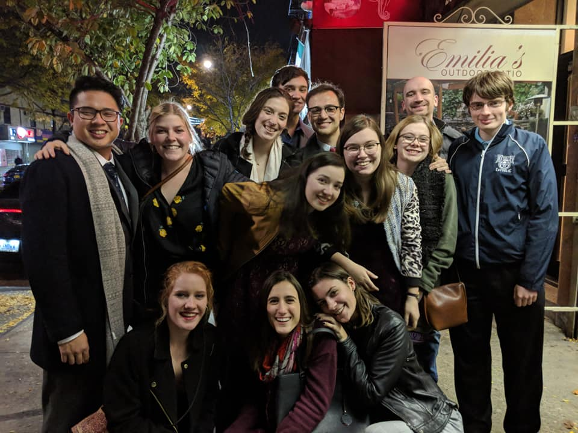

Pat
I made my middle name Pat after my grandmother, who is an artist and would always teach me different crafts or take me to performances when I was young.
But its also a bit of a joke because my best friend's name is Pat, so we say I named myself after him.
We used to work on plays together, so between the two, I chose to theme this page around theatre.
